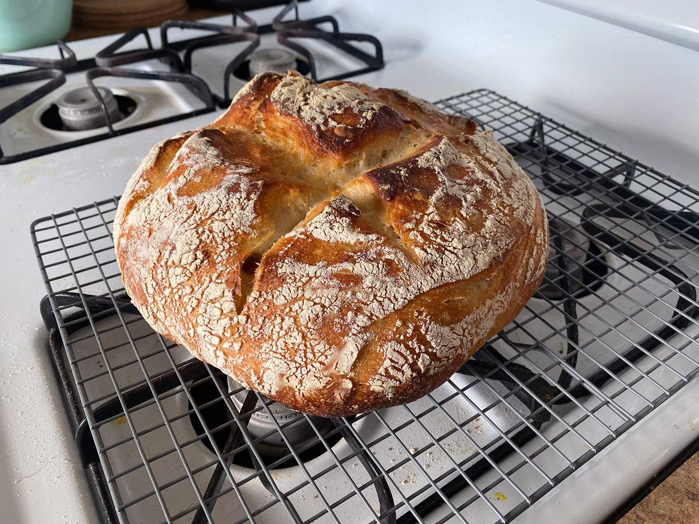
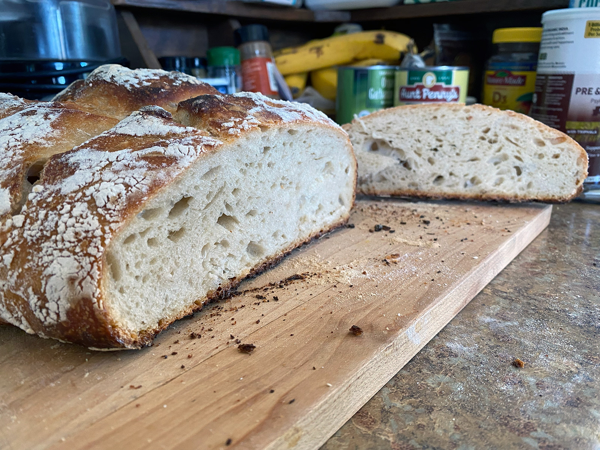

This is an easy recipe for a large loaf of sourdough bread which I started making early in the pandemic. It only uses sourdough starter for levening and, as the name suggests, does not require kneading.
Ingredients
- 3 cups all-purpose flour
- 1 teaspoon salt
- 1/2 cup active sourdough starter
- 1 1/4 cups lukewarm water
Instructions
- Start by weighing your flour; or measure it by gently spooning it into a cup, then sweeping off any excess.
- In a large mixing bowl or a large (6-quart) food-safe plastic bucket, combine all the ingredients.
- Mix and stir everything together to make a sticky, rough dough. If you have a stand mixer, beat at medium speed with the paddle attachment for 30 to 60 seconds. If you don't have a mixer, just stir with a big spoon or dough whisk until everything is combined.
- Leave the dough in the bucket or 6-quart bowl, cover it with the bucket's lid or a piece of plastic wrap, and let it rise for 1 hour.
- Gently pick up the dough and fold it over on itself several times, cover it again, and let it rise for another hour.
- Repeat the rising-folding process one more time (for a total of 3 hours), folding it again after the last hour. Then, place the bucket or bowl in the refrigerator, and let the dough rest for at least 8 hours (or up to 48 hours).
- When you're ready to make bread, turn the dough out onto a well-floured work surface, and shape it into a rough ball. Leave the dough seam-side up, cover it, and let it rest on a floured surface for 15 minutes.
- Next, shape the dough to fit the vessel in which you'll bake it: a 13" log for a 13" pain de mie pan or long covered baker, such as our glazed long covered baker; or a large boule (round) for a round baker or Dutch oven, such as our bread baking crock. Lightly grease the inside of your baker, or dust the inside with semolina; alternatively, place the dough on a sheet of parchment. Place the shaped dough in the baker (along with the parchment, if using), and cover it with the lid.

- Let the loaf warm to room temperature and rise; this should take about 2 1/2 to 3 hours. It won't appear to rise upwards that much, but will relax and expand.
- With a rack positioned in the middle, start preheating the oven to 500°F one hour before you're ready to bake.
- Just before baking, dust the loaf with a fine coat of flour and use a lame or a sharp knife to make one or several 1/2” deep slashes through its top surface. If you're baking a long loaf, one arched slash down the loaf lengthwise is nice, or if baking a round, a crosshatch or crisscross pattern works well.
- Cover the baker with its lid and place it in the oven. (If you're using a pain de mie pan, leave the lid off.) Reduce the oven temperature to 450°F and bake the bread for 45 minutes.
- Remove the cover of the baker and bake the bread for 10 to 15 minutes longer, until the bread is deep golden brown and crusty, and a digital thermometer inserted into the center of the loaf reads at least 210°F.
- Remove the bread from the oven and transfer it to a rack to cool completely.
- Store leftover no-knead sourdough bread, well wrapped, room temperature for several days; freeze for longer storage.